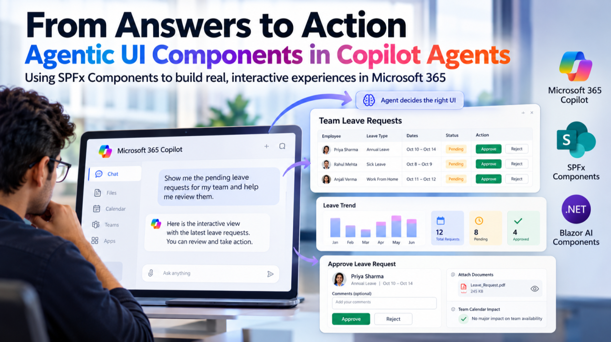

LinkedIn ArticleFrom Answers to Action: Agentic UI Components in Copilot Agents
What if your Copilot agent could do more than just return text? Agentic UI evolves AI experiences from passive conversational chat into interactive dashboards, structured forms, and contextual approval workflows using SPFx and Blazor AI components.
- Dynamic Agentic Interfaces: Moving beyond conversational text to embed functional cards, forms, and dashboards directly in agent workbenches.
- SPFx & Blazor AI Synergy: Exploring how SharePoint Framework client-side components and Blazor web parts empower agentic application delivery.
- Action-Driven Outcomes: Designing governed AI experiences that trigger business actions and approvals rather than just generating answers.